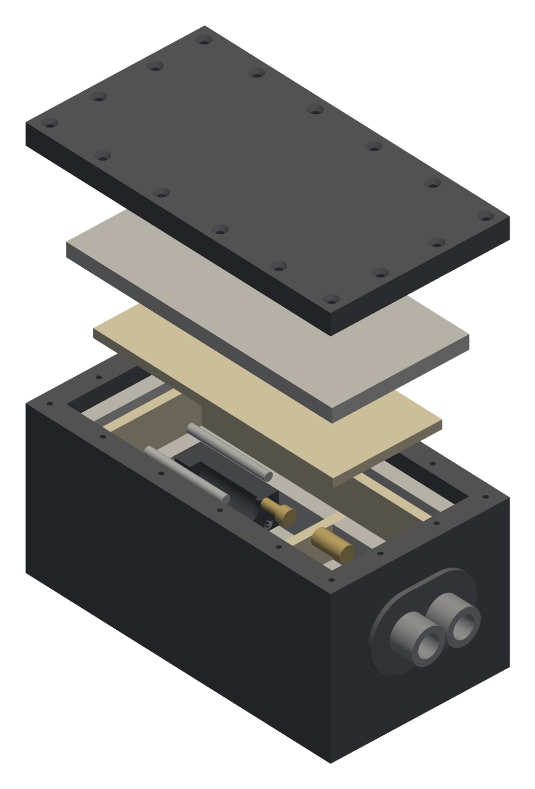

Projects
Funded by the Ministry of Science and ICT of Korea.
Rapid accident response
Radiation source measurement system in containment for immediate accident response
A prototype that identifies and quantifies radionuclides such as Cs and I inside a containment in a severe accident.
2.69billion KRW, total
- Period
- Jul 2022 to Dec 2026
- Institutions
- KAERI (lead) and Korea University

Low power sensing
Low power radiation sensor and radiation hardened RF circuit designs
A sensor running on 20 V or less and a wireless module working above 1 kGy, for monitoring outside the containment.
2.08billion KRW, planned total
- Period
- Apr 2022 to Dec 2026
- Institutions
- KAERI (lead), M1 International
Deep-learning surveillance
Development of radiation leakage surveillance technology based on deep learning
A leakage surveillance system on a small scintillator and SiPM node, with deep learning that identifies radionuclides in real time.
5.08billion KRW, planned total
- Period
- Apr 2022 to Dec 2029
- Institutions
- M1 International (lead), KAERI, Seoul National University